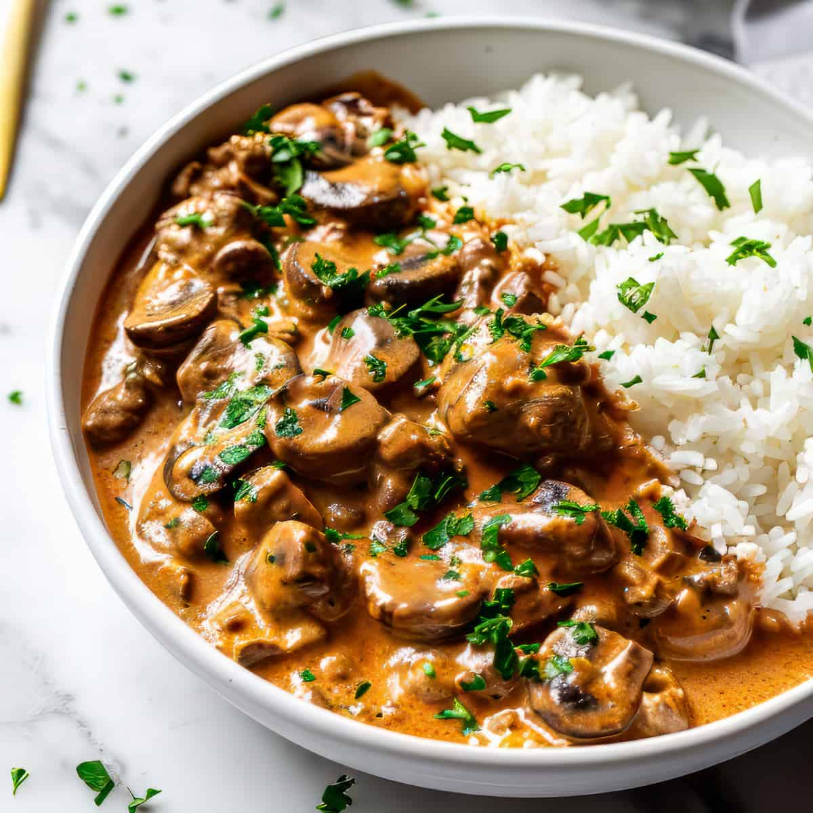

Spaghetti Bolognese

Ingredients:
- 400g spaghetti
- 500g ground beef
- 1 onion, diced
- 2 garlic cloves, minced
- 400g canned tomatoes
- Salt, pepper, and herbs (basil, oregano)
Tutorial:
Cook spaghetti. Sauté onion and garlic, add beef, and cook. Stir in tomatoes and simmer. Combine with pasta.
Tips:
Top with Parmesan for extra flavor.
Grilled Chicken with Vegetables
Ingredients:
- 4 chicken breasts
- 2 bell peppers, sliced
- 1 zucchini, sliced
- 2 tbsp olive oil
- Salt and pepper
Tutorial:
Season chicken and grill for 6-8 minutes per side. Grill vegetables until tender.
Tips:
Brush olive oil on veggies to prevent sticking.
Beef Tacos
Ingredients:
- 500g ground beef
- 1 taco seasoning packet
- 8 taco shells
- Shredded lettuce, cheese, and salsa
Tutorial:
Cook beef with seasoning. Fill taco shells with beef and toppings.
Tips:
Warm taco shells before serving.
Chicken Alfredo

Ingredients:
- 400g fettuccine
- 2 chicken breasts
- 1 cup (240ml) heavy cream
- 1/2 cup (50g) Parmesan
- 2 garlic cloves, minced
Tutorial:
Cook pasta. Sauté chicken, set aside, then prepare sauce. Mix pasta and sauce.
Tips:
Add parsley for garnish.
Beef Stroganoff

Ingredients:
- 500g beef strips
- 1 onion, sliced
- 200g mushrooms
- 1 cup (240ml) sour cream
- 1 tbsp mustard
Tutorial:
Sauté beef and onions. Add mushrooms and stir in mustard and sour cream.
Tips:
Serve over rice or pasta.
Vegetable Stir-Fry

Ingredients:
- 1 broccoli head
- 2 carrots, sliced
- 1 bell pepper, chopped
- 2 tbsp soy sauce
- 1 tbsp sesame oil
Tutorial:
Heat oil, add vegetables, and stir-fry. Finish with soy sauce.
Tips:
Top with sesame seeds for extra crunch.
Lamb Chops with Mint Sauce
Ingredients:
- 4 lamb chops
- 2 tbsp olive oil
- Salt and pepper
- 1/4 cup (60ml) mint sauce
Tutorial:
Season and grill lamb chops. Serve with mint sauce.
Tips:
Rest lamb for 5 minutes before serving.
Pizza Margherita

Ingredients:
- 1 pizza dough
- 200g mozzarella cheese
- 2 tomatoes, sliced
- Fresh basil leaves
- Olive oil
Tutorial:
Top dough with tomatoes, mozzarella, and basil. Bake at 450°F (230°C) for 10-12 minutes.
Tips:
Drizzle olive oil before serving.
Butter Chicken

Ingredients:
- 500g chicken
- 1 cup (240ml) tomato puree
- 1/2 cup (120ml) cream
- 2 tbsp butter
- Spices (cumin, coriander, garam masala)
Tutorial:
Sauté chicken, add spices, and mix in tomato puree and cream. Simmer for 20 minutes.
Tips:
Serve with naan or rice.
Salmon with Lemon Dill Sauce
Ingredients:
- 4 salmon fillets
- 1 lemon, sliced
- 2 tbsp dill
- 1/2 cup (120ml) yogurt
- Salt and pepper
Tutorial:
Season salmon, bake at 400°F (200°C) for 12 minutes. Serve with dill sauce.
Tips:
Squeeze fresh lemon juice over salmon before serving.
Paella
Ingredients:
- 2 cups (400g) rice
- 1/2 lb (250g) shrimp
- 1/2 lb (250g) chicken
- 1 bell pepper, sliced
- 2 tsp saffron
Tutorial:
Sauté chicken and vegetables, add rice and broth. Simmer with seafood and saffron.
Tips:
Let paella rest for 5 minutes before serving.
Chicken Parmesan

Ingredients:
- 4 chicken breasts
- 1 cup (120g) breadcrumbs
- 1/2 cup (50g) Parmesan
- 1 cup (240ml) marinara sauce
- Mozzarella cheese
Tutorial:
Bread and bake chicken, top with marinara and cheese, and bake again until melted.
Tips:
Serve over spaghetti for a complete meal.